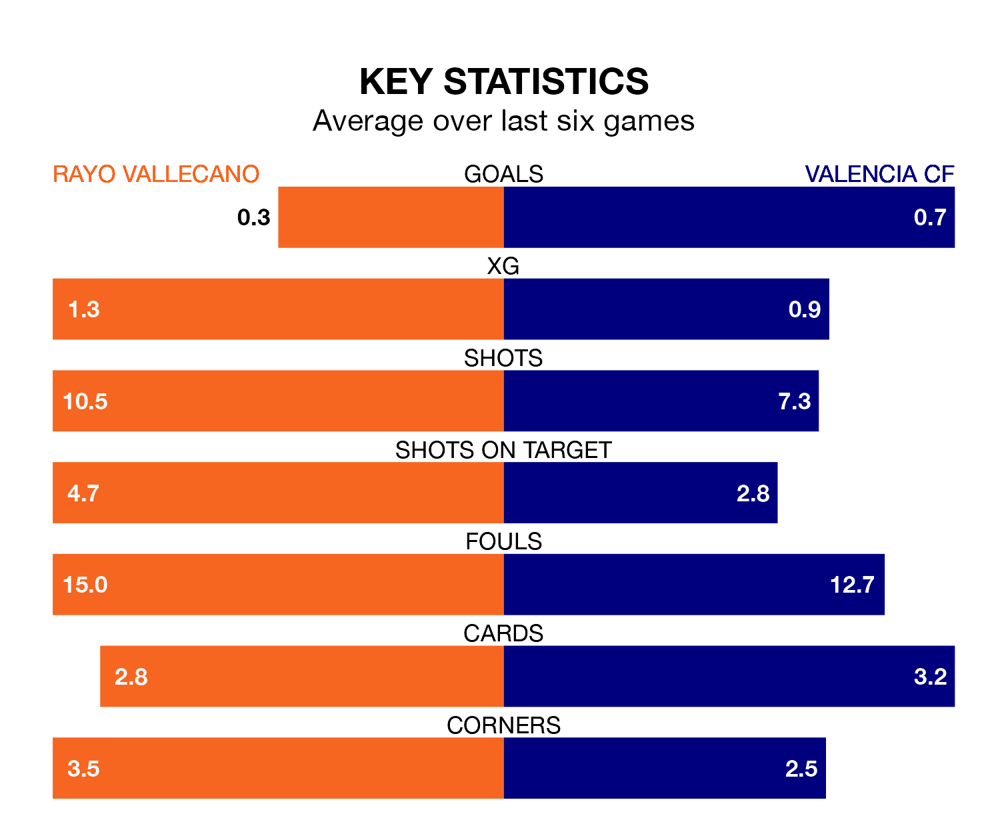

Rayo Vallecano face Valencia CF at Estadio de Vallecas on late Tuesday looking to secure a first win in eight La Liga games.
Rayo Vallecano have lost three and drawn four matches since they last earned three points – against UD Las Palmas on October 22.
They face a Valencia side who have won one and drawn three over that time.
With Stole Dimitrievski between the sticks, Rayo can rely on one of the league's safest pair of hands. He has kept seven clean sheets in his 17 appearances this season, and no 'keeper has prevented the opposition scoring more often in La Liga.
In Valencia's net, Giorgi Mamardashvili has five clean sheets in 17 games.
In the last 10 years, Rayo and Valencia have played each other on 13 occasions. They won three each, and they drew seven times.
On average, Rayo Vallecano scored 1.2 goals and Valencia CF 1.5 in those matches.
Their last meeting was on April 3, when they played out a 1-1 draw.
With 16 goals in 17 games so far this season, Rayo Vallecano are scoring at below the league average rate with 0.9 goals per game. And they are conceding more than average, letting in 23 goals at a rate of 1.4 per game.
Valencia CF are also below average scorers, with 1.1 goals per game, compared to a league average of 1.3. They have conceded 1.3 goals per game.
The hosts are 11th in the table after 17 games, of which they have won four and drawn eight, earning 20 points.
The away team are one place ahead of Rayo in 10th, with five wins and five draws putting them on the same number of points.
Rayo's last match was on Friday, a 1-0 loss against CA Osasuna.
Valencia drew 1-1 with FC Barcelona last time out, on Saturday, with Hugo Guillamón on the scoresheet.
